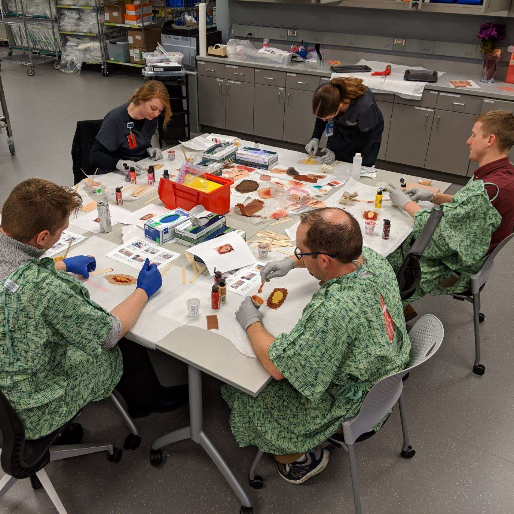

Projects and Experience
Missouri Online
Instructional Technologist, June 2021-Present
In my current role as an instructional technologist for Missouri Online, I spend my days answering questions from users across the four University of Missouri campuses. Sometimes these are straightforward questions that can be answered in a matter of minutes. Other times, they require a lot of troubleshooting and brainstorming with other members of my team. I get to hear firsthand how technology is being used in courses. And I’m often the first to hear about what’s working, and what’s not. One of my favorite tasks is leading technology training for our users. Recently, I created some videos on Assignments and Quizzes in Canvas to provide an asynchronous training option.
Canvas AssignmentsCanvas Quizzes
I love working with students, faculty, and staff in this role. I enjoy helping solve technology problems and de-escalating panicked phone calls into sighs of relief. I also appreciate seeing the creativity of instructors. It’s always fun to brainstorm with them on how technology can be used to change their assignments and help meet learning objectives. At the end of the day, my goal is to ensure that the technology is helping the students and working for the instructors, not against them.
Zamierowski Institute for Experiential Learning (ZIEL), University of Kansas Medical Center
Communications and Project Coordinator, July 2018-May 2021
When you tell people that you worked with manikins that can blink, breathe, and give birth, you’re bound to get their attention. I worked as the communications and projects coordinator of the Zamierowski Institute for Experiential Learning (ZIEL) for nearly three years. I helped coordinate healthcare simulation programming to train students and experienced professionals. This included everything from scheduling meetings to designing in-room posters and cognitive aids. I also helped coordinate our online file-sharing system through SharePoint and managed the Simulation Instructor Training program. While I didn’t spend as much time with the manikins as some members of our team, I did occasionally get pulled in to help change a hospital gown or wheel a manikin to a different room.


No day at ZIEL was exactly like the one before it. There was always something new to learn, such as creating realistic wounds out of silicone, and a different project to work on. I learned so much in this role that I wouldn’t have anywhere else. I gained insight into a different aspect of experiential education that I never even knew existed. But I also saw the high cost of these trainings. Simulation requires expensive equipment, well-trained staff, and months of planning. While I think these experiences have great value, I think there is a considerable opportunity to provide high-impact experiences to every student through technology.
Career Services, University of Missouri-Kansas City
Manager of Internships and Employer Relations, March 2016-July 2018
Although my official title was Manager of Internships and Employer Relations, I helped with almost everything in the Career Services office. We had a small, but mighty team. I got to work with students one-on-one to craft resumes, write cover letters, and plan out their career goals. I developed and taught workshops for the department and partnered with employers to recruit UMKC students. I also led the marketing and communications for the department. This included working on two large print pieces. The first was the Internship Toolkit. The Toolkit was designed to help employers develop internship programs. It helped guide them through the questions of compensation, time, and tasks. We wanted to ensure they were creating positions that would benefit the company and the student. The second project was an update to the Career Development Guide. This guide helped students through their entire career journey. It included resume-writing advice, professional attire suggestions, and job search tips.
Internship ToolkitCareer Development Guide
While most people don’t enjoy discussing the intricate details of resume writing, I always did. That’s why working in Career Services was a great job for me. I loved working directly with students and helping them think about their future careers. But as I learned more about high-impact learning experiences, I realized that I wanted to create those experiences, not just help a student summarize them on their resume.
School of Pharmacy, University of Missouri-Kansas City
Senior Student Recruitment Specialist, May 2015-March 2016
My first role in Kansas City was with the School of Pharmacy at the University of Missouri-Kansas City. I focused on recruiting high school students to the Pharmacy program at UMKC. One of my first assignments was to launch the Early Assurance program. This allowed students to complete their first two years at UMKC with additional support and guidance from the Pharmacy team. They’d have an advantage as they applied for the Pharmacy program and wouldn’t need to worry about credit transfer or meeting the requirements of the program. I recruited students across the state of Missouri and led tours and information sessions for the Pharmacy program. I loved developing relationships with students and made sure they knew I was happy to answer all their questions. I even created a personalized follow-up postcard to send out.
Early Assurance BrochureFollow-Up Postcard
Working directly with students was my favorite part of this role. It was fun to meet them at a college fair and then see them again for a tour. I enjoyed answering their questions and reviewing their applications. I also enjoyed thinking about the entire journey to become a pharmacist. While I mainly worked with prospective high school students, one of my favorite things to talk with them about was the year they’d spend in different rotations learning about the field of pharmacy. My focus was already shifting from getting students in the doors of a college, to what they’d be learning while they were there. I knew that high-impact experiences made a difference.